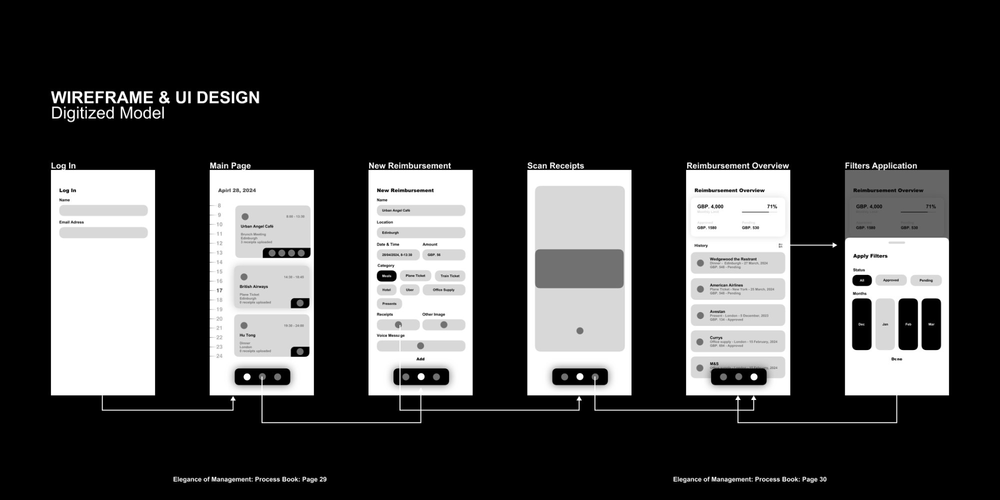
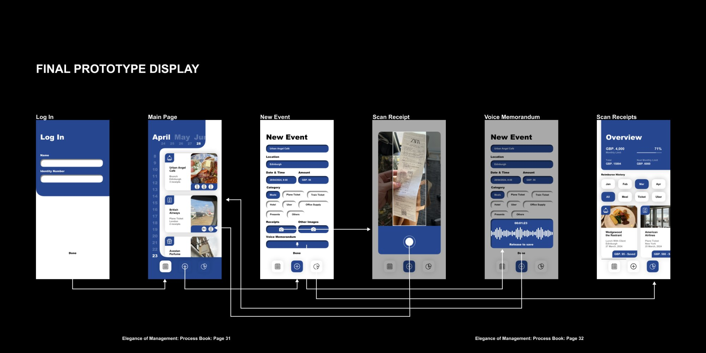

The system at a glance: screens, the information architecture, and the icon, type and colour kit that holds them together.
Business trips end with a paper trail nobody enjoys: a pocket of crumpled receipts, an evening of forms, and a claim that takes weeks to trace.
The brief asked me to design around the daily professional difficulties of someone close to me. That person was Mr. Dakai Yang, a colleague who travels constantly for work, and his reimbursement routine became the starting point. Elegance of Management grew from there into a mobile service that makes expense reimbursement quick and traceable. I ran the project on my own over Feb to Jun 2024, from field interviews at ITS China through to a working app prototype. The goal was simple to state and hard to earn: turn an hour of admin into a few taps, and give every claim a clear, findable history.
Field interviewsSurvey of 11Service designReceipt scanningVoice notesMobile prototype
01
Listen
The starting point was Mr. Dakai Yang, my primary user, who claims expenses after almost every trip. To test whether his frustration was widely shared, I took it to two senior people at ITS China, the China Intelligent Transportation Systems association. Each described the same routine from a different angle, and together they pointed at one shared problem rather than a general complaint about finance.
Mr. Dakai Yang Primary user
“
Applying for reimbursement after a business trip is genuinely painful. You hoard every ticket, then spend an evening copying them onto a form.
Prof. Junli Wang Supervisor, ITS China
“
Keeping every physical receipt across a whole trip has become a real burden. One lost slip and the claim stalls.
Ms. Ying Yang Secretary General, ITS China
“
It is almost impossible to find a reimbursement report from a trip two months ago. The history simply is not there.
The pain was never the money. It was the paperwork, the waiting, and the lack of a trail once a claim was filed.
02
Measure
To check the interviews held beyond three people, I surveyed eleven professionals across the transport industry about their last reimbursement. The numbers were blunt. Reimbursement was the clear winner among finance headaches, and a single report routinely ate most of an afternoon.
90%of participants
named reimbursement a real problem at work, ahead of every other finance task.
84 minaverage per report
11professionals surveyed
Time spent on the last reimbursement report
Over 90 min
54%
60 to 90 min
27%
30 to 60 min
9%
Under 30 min
9%
What gets claimed most, by mentions
Plane tickets
20
Train tickets
9
Meals
6
Hotel
4
Uber
4
Office supply
3
Presents
2
That settled the scope. Instead of a broad finance tool, the project would solve one job well: the trip-to-claim journey, with travel and meals as the everyday cases to design around.
03
Choose a direction
Before designing anything, I weighed the obvious fixes and threw most of them out. Each had a clear reason to fail, which made the right path easier to commit to.
01Hire reimbursement specialists. Rejected. The headcount costs more than the problem is worth.
02Standardise the paper form. Helpful, yet people still carry and store every physical receipt.
03Present receipts in person after each trip. Honest, and far too slow for everyone involved.
04Pay a fixed travel allowance. Removes claims entirely, and is impossible to keep fair across different trips.
05Fully digitise receipts at source. Ideal on paper, blocked in reality by the many formats merchants use.
06Scan receipts with the phone camera. Chosen. Achievable today, easy to use, and it covers the pain points in one move.
A camera every traveller already carries, paired with one standard digital form, was the most effective answer that could actually ship.
04
Design the flow
The service is built around a single loop. A trip becomes an event, an event collects its own receipts and notes, and the dashboard keeps the running history that the interviews said was missing. The new-event screen carries the weight, so I kept everything else light.
01Sign inName and identity number, nothing more.
02DashboardSpend so far, plus every past claim and its status.
03New eventScan the receipt, set the category, add a note.
04Auto tagDate, amount and place read from the scan.
05DoneThe claim files itself into a traceable record.

The wireframe stage, every screen mapped in grey with the interaction plan drawn between them.
05
Test and refine
A paper model put the flow in front of real users, including several older participants. Three pieces of feedback changed the design, and each one earned its place by being specific.
01“Bigger text and icons, please.” Older users found the layout tight, so the copy was streamlined and every icon enlarged for an easier tap.
02“Commonly used is not useful.” A shortcuts panel for frequent events sounded smart, yet claims are occasional by nature. I dropped it and let each event stand on its own.
03“Can we leave a message?” People wanted to explain an odd expense without typing. That request became the voice memorandum attached to every event.
06
The app
The result is a calm, single-purpose app. Every screen serves the trip-to-claim loop, and the work that used to take an afternoon now fits in the gaps of a journey home.

The final prototype, the same flow resolved in the app’s navy and white, with the interaction plan carried through.
No marking by handThe scan tags date, amount and place to each receipt automatically.
No messy formatsEvery claim follows the same order and template, so approval is faster.
No losing trackThe dashboard keeps a full history, ready to open months later.
The most elegant management is the kind you stop noticing, because the work quietly takes care of itself.